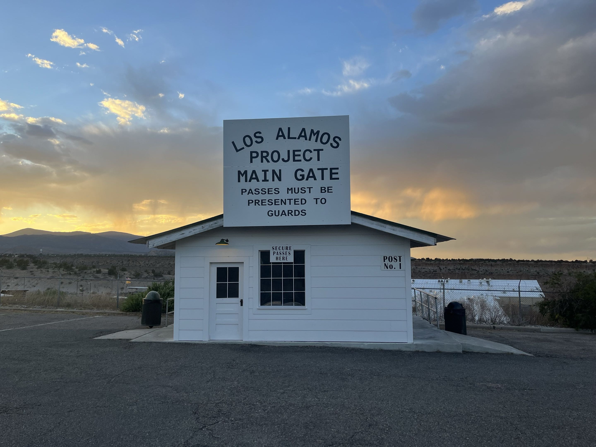
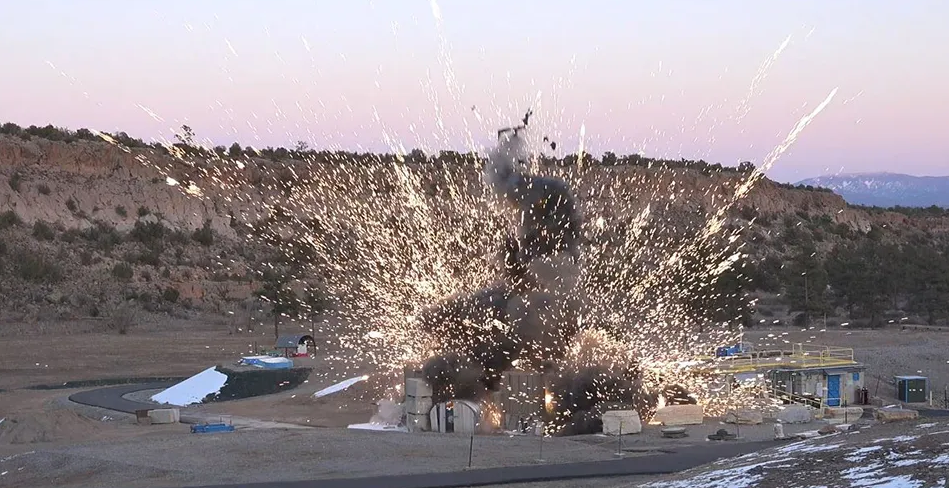
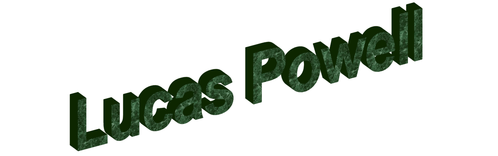

Los Alamos National Laboratory
June 2026 to Present
LANL.... I work at Los Alamos National Laboratory in the Dynamic Experiments (M-6) Division, Explosive Applications and Special Projects group. The Explosive Applications and Special Projects group (M-6) serves the Laboratory and the nation by providing the knowledge base in high explosive testing for the Nuclear Weapons Program and other national security areas. I have participated in test design, fabrication, and execution.


End of Page
